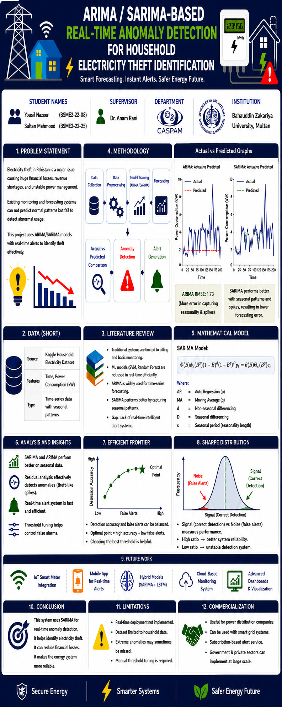

AI Enthusiast • Data Analyst • Mathematics Graduate
I am a Mathematics graduate with a strong interest in Artificial Intelligence and Data Analysis. My mathematical background helps me understand statistical models, probability theory, and analytical techniques used in modern AI systems. I enjoy working with tools like Python, Excel, and Hugging Face to explore machine learning models and analyze real-world datasets. My goal is to build a career combining Mathematics, Finance, and Artificial Intelligence to create intelligent data-driven solutions.
Applying analytical and mathematical thinking to solve complex real-world problems.
Analyzing datasets and extracting meaningful insights using statistical methods.
Building predictive models and exploring AI based analytical systems.
Using Python for machine learning, forecasting, and data processing tasks.
Data organization, visualization, and analysis using advanced Excel tools.
Collaborative teamwork and leadership experience through academic activities.

This project focuses on detecting abnormal electricity usage patterns using ARIMA and SARIMA forecasting models. The system analyzes household electricity consumption data in real time to identify suspicious anomalies that may indicate electricity theft.
Modern responsive websites with professional UI design.
Professional portfolio websites for students and professionals.
Analyzing and visualizing data using Excel and Python.